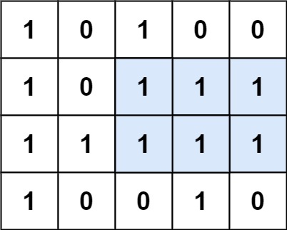

85. 最大矩形
逐行累计「往上连续 1」的高度得到直方图，每一行套 84 题单调栈求最大矩形，全局取最大。
思路
- 以每一行为底：
h[j]= 从这行往上连续 1 的高度（遇'0'清零），底行能成的最大矩形 = 直方图问题。 - 直方图用单调递增栈（84 题）：柱子弹出时，高=
h，左右边界是两侧第一根更矮的柱子。 - 末尾补高度 0 的哨兵，把栈里剩的柱子全部清算一遍，不用写两次循环。
- 每行算一次，
m行共 O(mn)；h数组就地滚动，空间 O(n)。
图解
最优解
1class Solution {2 public int maximalRectangle(char[][] matrix) {3 int cols = matrix[0].length;4 int[] h = new int[cols];5 int ans = 0;6 for (char[] row : matrix) {7 // 逐行累计高度：从这一行往上连续 1 的个数8 for (int j = 0; j < cols; j++) h[j] = row[j] == '1' ? h[j] + 1 : 0;9 // 以这一行为底的最大矩形，取全局最大10 ans = Math.max(ans, largest(h));11 }12 return ans;13 }14 15 // 84 题原题：直方图里的最大矩形，单调递增栈16 private int largest(int[] h) {17 int n = h.length;18 int[] hh = new int[n + 1];19 System.arraycopy(h, 0, hh, 0, n); // 末尾补 0 当哨兵，逼出栈里所有柱子20 int[] stack = new int[n + 1]; // 存下标，从栈底到栈顶高度递增21 int top = 0, best = 0;22 for (int i = 0; i <= n; i++) {23 while (top > 0 && hh[stack[top - 1]] >= hh[i]) {24 int height = hh[stack[--top]]; // 弹出的柱子决定矩形的高25 int left = top > 0 ? stack[top - 1] : -1; // 左边第一根更矮的柱子26 best = Math.max(best, height * (i - left - 1)); // 宽 = 两根矮柱之间27 }28 stack[top++] = i;29 }30 return best;31 }32}题目
给定一个仅包含 0 和 1 、大小为 rows x cols 的二维二进制矩阵，找出只包含 1 的最大矩形，并返回其面积。
示例 1：

输入：matrix = [["1","0","1","0","0"],["1","0","1","1","1"],["1","1","1","1","1"],["1","0","0","1","0"]] 输出：6 解释：最大矩形如上图所示。
示例 2：
输入：matrix = [["0"]] 输出：0
示例 3：
输入：matrix = [["1"]] 输出：1
提示：
rows == matrix.lengthcols == matrix[0].length1 <= rows, cols <= 200matrix[i][j]为'0'或'1'
题面取自力扣当前版本。
数据快照 2026-11-04。题面版权归力扣所有，本站点仅供本人学习使用，请勿对外发布。